In Thunder CTF, one first plays the attacker path and then can subsequently identify their own actions within the audit logs of the project. This Defender CTF leverages the Thunder CTF framework in order to have you practice performing incident response on an unknown attack in order to practice security auditing and incident response on Google Cloud. If you have already played the original Thunder CTF levels, you will have been exposed to most of the concepts contained in these labs.
The exercises are effectively a "reverse" CTF. Most CTF exercises have you seek out the exploit or play what is referred to as the ‘red team'. In our exercises, the exploit has been automated along with the deployment of the environment and you play the defender or the blue team.
In each level, an incident has happened that you have been called on to investigate. Your job is to study the audit logs of the project in order to identify the electronic trail left behind by the fictional attacker. Each level of the codelab sets you up for the next and you follow the fictional hacker in the reverse steps of the exploit, giving you a good idea of how the attack has occurred. Note that, if you aren't familiar with IAM or service accounts, check out the basics from Google. You should have at least a primitive understanding of what service accounts are and how roles are used to limit their access. In cloud environments, a hacker's goal is usually to move between these service accounts to increase their privileges within the project.
Follow the instructions to set up a new project with Thunder CTF at https://thunder-ctf.cloud
Ensure that detailed audit logs are turned on for Google Cloud Storage, Compute Engine API and Cloud Functions by the Audit Logs configuration page from the web console under "IAM & Admin". Without detailed auditing enabled, the log entries required to perform forensic analysis in this codelab will not appear.
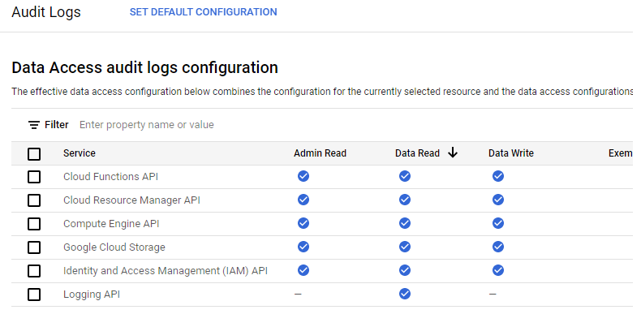
If they are not turned on, you can click on "Set Default Configuration" and enable all detailed logs.
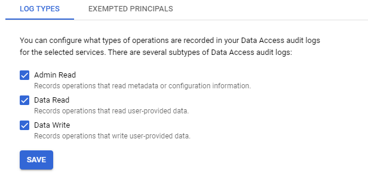
You are now ready to play the CTF! A full list of commands can be found by running;
python3 thunder.py helpFrom within the thunder-ctf directory in Cloud Shell, launch the defender/intro level. After the level has been deployed, make a note of the start time.
python3 thunder.py create defender/introIn this scenario, a key has been leaked and used to perform unauthorized actions. We wish to find out how this happened. GCP automatically logs many events that take place on the system. To view events related to the project, open the Logs Explorer for the project:
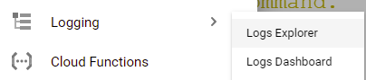
https://console.cloud.google.com/logs
The key we are concerned about is stored in the start directory of the console. View the contents of "intro-leaked.json" in Cloud Shell:
cat start/intro-leaked.jsonFind the private_key_id of the credential within the file. An example is shown below:
"private_key_id": "4bc0...f5"This private key ID will be associated with any logs for events performed using the leaked key for authorization.
The query builder at the top of the Logs Explorer is a very useful tool for navigating the logs of a cloud system. To view the logs associated with the leaked key, simply enter the private key ID into the query builder and run the query.
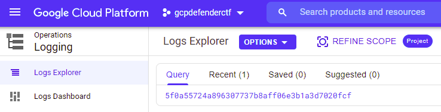
The results should contain the log entries for two events. Expand the first (earlier) entry by clicking on it and expanding the nested fields.
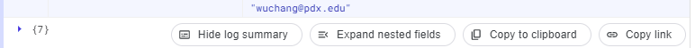
We are interested in two fields. The protoPayload.authenticationInfo.principalEmail field indicates the account that was used to perform the action while the protoPayload.methodName describes the action taken.
The two fields indicate that this event is from when the service account key was initially created during the system's deployment.
Expand the second entry:
We now have the service account that accessed the resource. With each service account,one can issue multiple account keys that can be used to authorize access to cloud resources as the account. When a compromise happens as a result of a key leaking, it is important that one deletes the compromised key.
Revisit the second entry and find the serviceAccountKeyName of the key that was used to perform the action. The field should look like this:
serviceAccountKeyName:
"//iam.googleapis.com/projects/thunder-305703/serviceAccounts/intro-npc@..."Go back to the web console. Within "IAM & Admin"=>"Service Accounts", find the service account that is associated with the "compromised" key. Note that if it does not appear, you may need to add the "Service Account Admin" Role to your account.
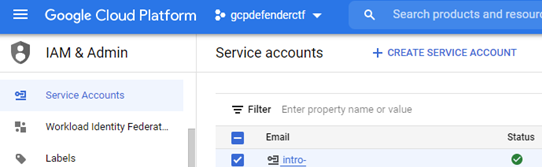f
Click on it and show all of the keys that have been issued to the account. As part of your incident response, delete the "compromised" key.
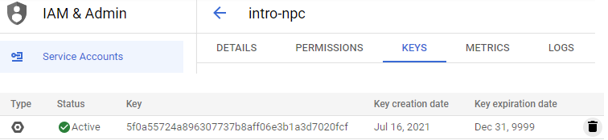
In a real scenario, we would also need to notify any users whose data was accessed by this key that their information has been potentially compromised.
Once finished, be sure to destroy the deployment so that your project does not accrue unnecessary charges.
python thunder.py destroyIn this exercise, a fictional social media site has been compromised. The site contains resources that one might expect a site like Twitter could have including a database to store users and their information and a Compute Engine instance running the site that interacts with that data. The site also contains a cloud function that is used only for developers to remove users. Finally, there is a bucket used by developers to store the source code of the Compute Engine instance that powers the site. A diagram containing all of the site's components is here:
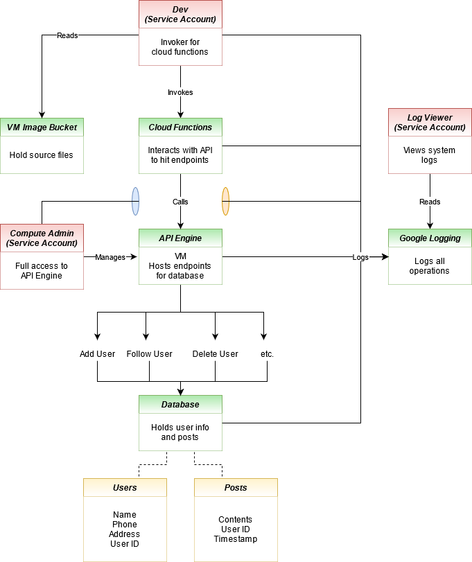
In this exercise, we have discovered that statuses are being made for accounts whose owners are not posting said statuses. Our goal is to find out how the posts are being made, how the attackers gained the ability to do such posts, and identify any compromised service accounts used in the exploit.
Open up Cloud Shell in your Thunder CTF Google Cloud project, activate your Python virtual environment and launch the level.
python3 thunder.py create defender/auditNote that deploying this level may take around 10 minutes. It is important not to abort the level setup before the resources finish deploying, as it will leave you unable to easily destroy the deployed resources and may require you to create a new project.
As the overview diagram shows, statuses are stored within a table in the database, and all communication with the database goes through the site's "API Engine" that runs on a Compute Engine VM. Our first step in the analysis will be to investigate this VM. Begin by visiting Compute Engine via the web console.
https://console.cloud.google.com/compute/instances
Use the console to SSH into the VM. When logged in, the system indicates that it is running Docker. View the container images that the VM contains:
docker images
Several container images have been downloaded. One image seems to have a suspicious name. To see what container images are currently running on the VM, perform a container listing:
docker ps
It appears that an attacker has created a rogue version of the container image that was running your application and replaced the legitimate container with a modified one. The last field of the listing is the name of the running container. Investigate the container, by executing an interactive shell on it using its name.
docker exec -it [container_name] /bin/bash
Perform a full process listing on the container.
ps auxwwThe site appears to be running a web application using gunicorn and a proxy that connects to a Cloud SQL database instance.
Visit the Cloud SQL interface in the web console.
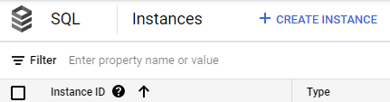
Back within the container, we will use the /proc filesystem in Linux to investigate the running processes. Navigating to /proc/ where
ls -ld /proc/<PID>/cwdWhen examining the ps listing of the web application process, it appears to be running gunicorn with the argument main:app. This means it is loading up main.py and an object within it called app. In the working directory for the web application, examine the code it is running. In the code are API endpoints that can be accessed to add users, follow users, and delete users. They are all part of the original application.
The last route in the file, in particular, looks suspicious.
It is likely that this code was used to push the status updates into the database. However, in order to have deployed this code, the attacker must have had the permissions necessary to replace the VM's container image. We will turn our investigation towards this.
Navigate to the Logs Explorer and query for the VM Instance resource type and log entries with severity "Notice".
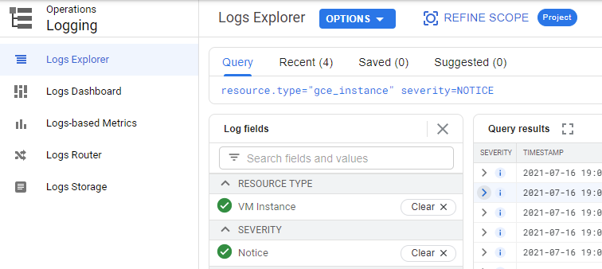
The most recent events show that the VM was stopped and restarted. Going back before the restart, the logs also show that the VM's metadata was altered prior to the restart, likely to change the URL of the image the VM boots from on startup. Expand out this log entry that has changed the VM's metadata.
protoPayload.metadata)?We have reached the end of the first part of our analysis. We know that posts were being made from an endpoint added to the application by the attacker. This was made possible by leveraging a service account that was able to change the boot image for the VM in its metadata. We must now analyze the security of this service account and ensure that the service account key used in this operation is deleted.
The attacker obtained a service account key with the ability to view and replace the code for our running web application. We will investigate how access was obtained to this key and how the attacker managed to acquire and modify the source code for the site. Referring to the site diagram, we know there is an vm-image-bucket that holds the source files for building the image used by the VM. This is the most likely place the attacker could find the source code.
Use the Logs Explorer to investigate access to the storage buckets of the project, restricting the time range to within the time range that the project was deployed. Within Logs Explorer, use the interface to find all accesses to the vm-image-bucket. One way to obtain these accesses is to search for the bucket name, then selecting the entries matching the "gcs_bucket" resource type.
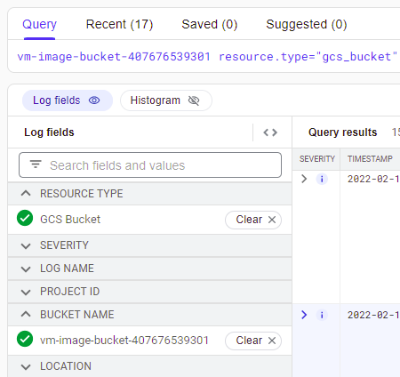
There are a set of requests that get objects out of the bucket. Expand out each one:
protoPayload.authenticationInfo) used to retrieve each object?It appears the files have been retrieved by a developer account. One of the accesses is for main.py. If this were the attacker, this would explain how the source code was obtained. Another access, in particular, is alarming as it appears to be a JSON file that might hold a service account key.
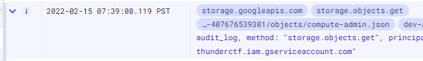
protoPayload.resourceName)? It would seem that in an effort to make their lives easier, the developers kept all the tools they would need to update the Compute Engine instance within this bucket, including the service account key needed to perform the update. This is an obvious problem as it allows anyone with access to the bucket to elevate their privilege using the credential stored within it.
We will need to disable this key since it may have been compromised and shouldn't be stored in this bucket in the first place. We can delete the service account key using the Google Cloud GUI, but we can also do the same using a gcloud command from Cloud Shell. First, view the key file in the bucket and find the service account associated with the key. Make a note of the private_key_id and the client_email (e.g. the service account) for the key.
Then, list all of the keys for the service account.
gcloud iam service-accounts keys list \
--iam-account compute-admin@[project-id].iam.gserviceaccount.com
There should be two keys listed, one of which expires in two years, and one which expires in the year 9999, which is the default when a key is generated. One key is used by Google's backend and cannot be deleted, but the second one matches the private_key_id of the key being stored in the vm-image-bucket. Attempt to delete this key using the following gcloud command. (If you get a permission error, skip this step).
gcloud iam service-accounts keys delete [key-id] \
--iam-account compute-admin@[project-id].iam.gserviceaccount.com
Finally, we should remove the JSON file from the bucket to clean it up. Using the console GUI search for buckets and navigate to the vm-image-bucket. Since we are using a system account, we can view the files in the bucket. Select the JSON file and remove it from the bucket.
gsutil rm gs://vm-image-bucket-xxx/*.json
The true final step would be to advise the company to audit their CI/CD pipeline to ensure it is using best practices and that no service account keys are stored in buckets or the file system.
In the last level, we found that the attacker used the developer service account to download files from a bucket that contained the site's source code as well as a service account key that could be used to modify the web application. In this part, we will examine how the attacker was able to compromise the developer service account.
Begin with the Logs Explorer once more, and query for the developer account by entering in the following into the Query field. (Note that we could also search for the developer account key that the attacker used.)
dev-account
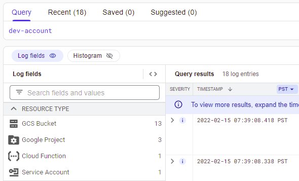
As before, the storage bucket accesses are shown, however, a log entry from a Cloud Function invocation also appears in the log data. Expand the entry out. It appears to be the error output of a failed Cloud Function call to remove a user. Visit the Cloud Functions console to examine the source code of the function that produced the entry. Find the code that generates this log data including the logger name the code tags its entries with. Then, go back to the log entry for the error.
jsonPayload of the log entryOne of the fields logged contains service account authentication information. It appears the developer mistakenly passed a service account key file into the request rather than an OAuth2 access token. The call failed and thus the event was logged. As often is the case with error messages, the entire payload of the request is included. Unfortunately, anyone who can view this error message log would be able to utilize the developer's service account key if they had the permissions to view the log data for the project.
jsonPayload.auth field. What is the private_key_id of the leaked key?As part of the incident response, we would need to delete this key as well, using the steps shown previously. Continuing our investigation, we now need to see who might have accessed the log entries of the logger that generated this error message.
The log-viewer service account exists specifically to view logs and is likely how our perpetrator might have accessed this error log. Examine all entries that either use the log-viewer service account or that view the rmUser logger data.
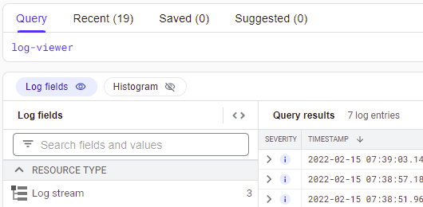
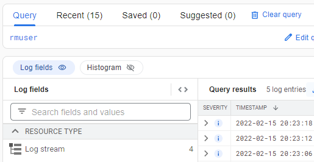
Google Cloud Platform automatically collects logging logs, logs that contain information on accesses to other logs. The most recent entries show that the log-viewer is attempting several "ListLogEntries" method calls using a filter. Expand out the entry and find the filter used to search the logs (protoPayload.request.filter).
This confirms our suspicions that the attacker used the log viewer to search through the logs associated with removing a user and discovered an error message that contained a developer's private key.
protoPayload.authenticationInfo) used to list the log entries?We end our analysis here. In an actual compromise, we would continue to apply similar methods to trace the log viewer accesses back to the source. As part of cleanup, we would need to advise the company to delete all exposed service account keys and to sanitize sensitive information from their logs to avoid this kind of attack in the future.
Once finished, be sure to destroy the deployment so that your project does not accrue unnecessary charges.
python thunder.py destroyIn addition, you can shut down the project created for the exercise by visiting https://console.cloud.google.com/iam-admin/settings